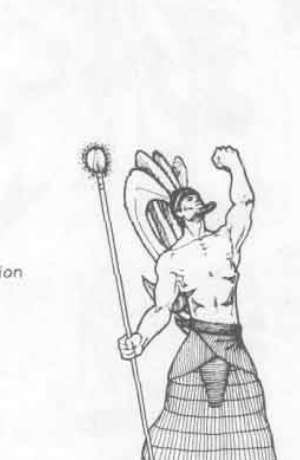

盖布、荷鲁斯、伊西斯、奈芙蒂斯 与 奥西里斯 · Geb、Horus、Isis、Nephthys 与 Osiris
Geb（土地之神） 统治大地与财富，能令地面隆起或吞没生物；Horus（鹰神） 是复仇与王权的守护者，免疫任何武器的第一次攻击，并会帮助善良复仇者。Isis（魔法与母亲女神） 掌管治疗、保护和法术；她的祭司对蛇类拥有额外攻击与伤害优势。
Nephthys 保护文明边缘的田地与沙漠，鼓励祭司消灭邪恶。Osiris（死者之王） 统治死者并负责审判；他的神殿既是墓地也是法庭。Set 则是带豺狼首的邪恶神，能以触碰把中立或善良生物改为守序邪恶，并召来自己的 Minions；Shu（天空之神） 和 Tefnut（风暴与流水女神） 共同维持天空、空气和雨水。Thoth（知识之神） 能即时知晓主物质位面上出现的新法术、装置与自然现象，持有触碰即死的权杖和记录神职、魔法知识的书卷。

上一节：阿努比斯、阿佩普、阿普赛 与 巴斯特 · Anubis、Apep、Apshai 与 Bast
下一节：芬兰神话 · Finnish Mythos